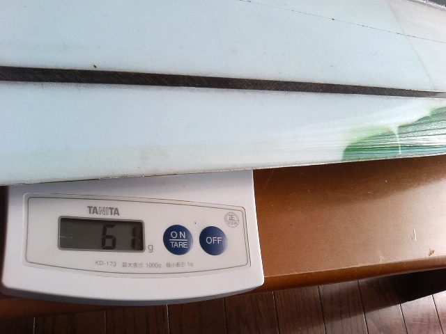

その昔、そろそろSAL機に手をつけようかなということになって、いろいろ購入候補をあたっているときに
Super Gee 2(SG2)に出会ったのです。その設計のポリシーの確かさと、何より製作技法を含めてすべてを公開して
共有してしまおうというMark Drela氏に強力に惹かれてしまい、いつかはSG2をと思っていました
そのときはFire Works III を手に入れることにしました。いきなり自作って言うわけにもいかないので。
あちこち修理したりしながらFWIIIをいじって、SAL機ってどんなものかっていうのがおぼろげながら
わかったところで自作に手をつけることにしたわけです。
で、はじめてみるとこれがまた材料にしても工法にしてもわからないことばかり。「こりゃ一大プロジェクトだ」と
いうことで「Yプロジェクト」と命名して、くじけないようにしてみました。
かれこれ3年近く続いているプロジェクトですが、去年までの目標は「直貼り主翼のちゃんと飛ぶDLGを作ること」
でした。今後の目標は2つ。
こんな感じで進めていきます。
SG2の図面は、Charls river RCのサイトにあります。
まずは一覧。
| 0号機重いVer. | 0号機軽いVer. | 1号機 フラッペロン | 2号機 フラップ/エルロン | |
| 全備重量 | 260g | 247g | 237g(修理後) | 236g |
| 翼長 | 1500mm | <-- | <-- | <-- |
| 翼面積 | 22.2dm^2 | <-- | <-- | <-- |
| 翼面荷重 | 11.7g/dm^2 | 11.1g/dm^2 | 10.7g/dm^2 | 10.6g/dm^2 |
| 受信機 | Berg*4 stamp | <-- | Berg 4L 改 | Berg 4L 改 |
| ラダー | JR DS381 | <-- | <-- | クラフトルーム c0714 |
| エレベータ | GWS Pico STD | <-- | GWS Pico BB | <-- |
| エルロン | OK 1809x2 | <-- | <-- | OK 1108x2 |
| フラップ | なし | なし | なし | OK 1108x2 |
| バッテリ | NiMH 300mAh | NiMH 150mAh | NiMH 150mAh | NiMH 195mAh |
| 重心 | 78mm | 80mm | 85mm | 88mm |
エルロンとフラップを装備した6サーボ機です。
もともとは単なる興味で作ってみたのですが、これがなかなかしっくりくるフィーリングで、今後はずっとこれで行こう
と思ってます
とまあ、こんな感じです。
重心位置は最近よくわからなくなってしまってる。80mmくらいでもだいぶ敏感だなと思っていたのだけれど、ダイブテストや 背面でのテストなどでもう少しうしろ..もう少し..ってやってたら今は88mm位。ランチも安定してきたような気がするし 特に飛ばしにくいということもないのでこれで飛ばしてます。
[[メカ]] エレベータのサーボはGWSのPicoなんですが、もう少しいいものに替えた方がいいかな。最近の流行は1108でしょうか。うーんちょっと高いんだよね。ニュートラルが甘いとかの問題もあまりないような気がするし。
エルロンの1108は外側にはこれしか入らないということと、フラップ用も半分の面積だから小さくでいいだろうということで
これを選んだのだけれど、特に問題はないみたい。最近はフラッペロンに使っている人も多いみたいだから問題なしかな。
|
|
|
|
| 2号機です。 | 裏側は、三角模様。 4つのサーボが見えます。 | ペグです。1mmのバルサをカーボンのクロスとロービングで固めたもの。 |
グラス貼りでYマウントののSG2といえるのが1号機です。
0号機でちゃんと作れるのがわかったので、2006年のメインとすべく作ったのですが、
最近は2号機ばかり飛ばしてます。
飛びは素直で扱いが楽です。完全に腕が追いついてません。
2号機のセッティングに合わせて最近は85mmくらいで飛ばしてます。
[[メカ]]受信機はBergの4chを6chに改造したもの。軽くて小さい6ch。
|
|
|
|
| 0/1/2号機です。 | 1号機 | 裏側は0号機とおなじ。 |
初めて作った直貼り主翼の機体です。
製作途中でローラーにクロスが張り付いてしまってしわくちゃになってしまったり、
樹脂が足りなくなってあわてて調合したり、いろいろ失敗を重ねてやっと作ったので、
かなりひどいできですが、これはこれでよく飛んだのでYプロジェクトを続けているという
記念碑的な機体です。
|
|
|
|
| 左の機体は、自作の胴体にFW3の主翼がついています。 | これがYpsilon 0号機。 | 裏側はこんな感じ。しましまは視認性抜群。 |
|
|
|
|
| Ypsilon0号機 を前から。上反角は7° | FW3の主翼と比べるとだいぶ大きなのが分かると思います。 | ポッド。刺さっているのはスイッチで、ぶらんとしているのがバッテリチェッカ。 |
|
|
|
|
| ペグ。SG2風だけれど、2mmのバルサにカーボンロービングのやっつけ仕事もの。 | FW3の主翼なので、エルロンサーボはポッドにある。でも、そんな設計の ポッドじゃないのでこんな風にポッドからホーンが飛び出しています。 | 重いバージョンは260g |
|
|
|
|
| 軽いバージョンは247g | 重いバージョンの電池。1/2AAA×4サイズ | 軽いバージョンの電池。1/4AAA×4サイズ |
いまだにいろいろ試行錯誤中なので、この手順・構成でOKという確証があるわけではありません。 ちょっとづつ進めてます。
発泡コア直貼りの主翼をつくります。まずはグラスでつくって、工法が確立して失敗しなくなったらケブラーで作る予定です。
製作にあたっての手順は、VACUUM BAGGING MADE EASYというビデオ
で紹介されている手法と全く同じです。このビデオ、直貼り主翼を作るのであれば、必見です。
尾翼は作り方は主翼とほぼ同じですが、水平尾翼のマウント部がポイントです。
最後の組み立てですが、もうやることはあまり残っていない。
2セット目をバッグから出しました
これも49g/m^2のグラスを使っています。補強の仕方はSG2の図面どおりです。


表と裏です。一枚目の写真はまだマイラーが張り付いているときのものです。マイラーに書いてあるガイドの書き込みが見えます。
今度は表の翼端をオレンジにしてみました。昔から使っているモチーフの、人呼んで「キリンバターン」になってます。視認性はどうでしょうね。
裏はしましま。
今回はもう一つ、主翼にQRコードを入れてみました。僕の情報が入っているんですが、出来上がって試してみたら読み込めない...。残念。
ロゴとコードはティッシュペーパーにプリンタで印刷したものを一緒に積層してあります。


左翼が62g・右翼が61gです。1セット目が60.1gと61.2gだったので、わずかに重い！。うーん、かなり樹脂を絞ったはずなんだけれどなー。
1セット目はサーボなしの状態で120gになったので、今度もそれくらいかな。全備重量も同じ程度ということかな。
左右の接合が終わったところです。サーボ搭載部穴あけ・リンケージスペース掘り・前縁/後縁の整形・エルロンの切り出しをして接合してあります。
でも、これから、中央部の補強・パイロン用のパイプの取り付け・配線・サーボの取り付け・リンケージとまだまだ
やることがたくさん。接合部付近に見えるのは、補強をするためのマスキングテープ。
並行して作っている3セット目もバッグから出しました
これも49g/m^2のグラスを使っています。この主翼は、フラップとエルロンを分ける仕様になっていますので、エルロン部の補強がSG2のものと異なり、
エルロンサーボ用の補強が主翼中央のスパーの後ろ側に入れてあります。それ以外の補強は同じです。
表と裏です。翼端はオレンジと緑にしてあります。裏はどこかのサイトで見かけたものを真似して三角パターンです。視認性はどうでしょうね。

左翼も61g・右翼も61gです。この作り方だと61gぐらいになるんだと思うしかないですね(笑)。
この主翼にはOKのS1108を4つ使う予定です。4.7gが4つで18.8g。S1809が2つで18gと比べて1gぐらいの重量増ですむはずなのですが、
ワイヤやリンケージなどでもう何gか必要なので、全体では10gくらいの重量増かもしれません。それと、サーボの数が増えるので、
バッテリーももう少し大きいのを積む必要があることを考えると、全備250gを切るのは難しいかなぁ。
製作にあたって集めたテクニックや道具や材料などの情報を並べていこうと思います。